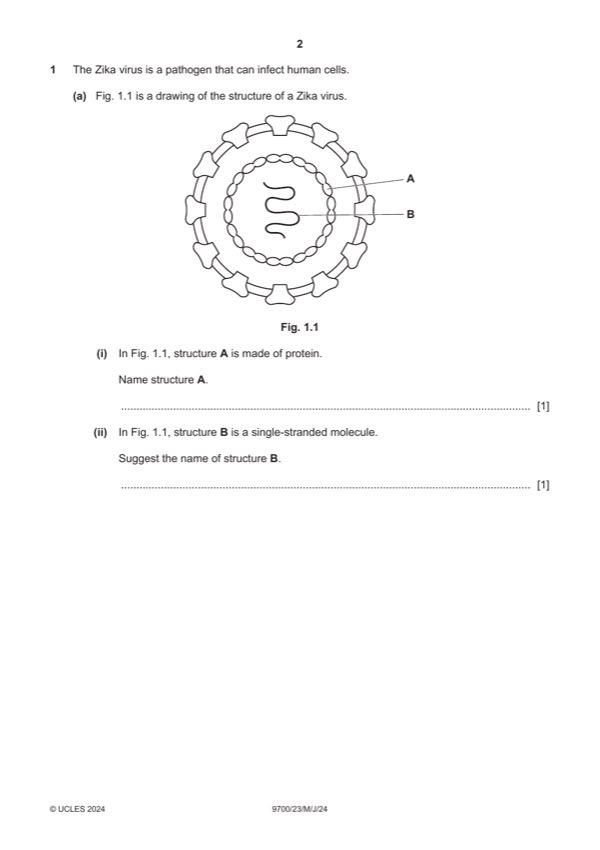

Question 1

Original paper page 2
Part 1(a)(i) — solution
capsid ; 1
A capsomere
A protein coat
Mark points
- Include the ideas shown in the solution above.
Part 1(a)(ii) — solution
RNA / DNA ; (actual is RNA) 1
I viral
R dsRNA / dsDNA / mRNA / tRNA / rRNA
Mark points
- Include the ideas shown in the solution above.
Part 1(b)(i) — solution
- working showing use of correct formula, A = I / M ;
Mark points
- working showing use of correct formula, A = I / M ;
Part 1(b)(ii) — solution
ability to distinguish between two points ; AW 1
Mark points
- Include the ideas shown in the solution above.
Part 1(c) — solution
malaria is transmitted by Anopheles (rather than Aedes) ; 3
plus any two from:
max 1 if incorrect context stated for malarial transmission
both are transmitted by vectors ;
both are transmitted by mosquitoes ;
both, are blood-borne diseases / vectors feed on blood ;
University Press & Assessment 2024 Page 4 of 10
9700/23 Cambridge International AS & A Level – Mark Scheme May/June 2024
Mark points
- Include the ideas shown in the solution above.
Part 1(d)(i) — solution
max three if no correct ref. within response to, memory cells / immunological 4
memory
A T- / B-cells, for, T- / B- lymphocytes
any three from:
Mark points
- Include the ideas shown in the solution above.
Part 1 — solution
proteins are, non-self / foreign, antigens ;
Mark points
- Include the ideas shown in the solution above.
Part 1(d)(ii) — solution
any two from: 2
ref. to herd immunity ;
A a large proportion of the population is immune (to Zika virus disease) ;
detail; e.g. context is less likely / less chance of / less risk of
people without immunity / unvaccinated people, less likely / unlikely, to
be in contact with an infected person
ora infected person unlikely to be in contact with a non-immune person
idea of increased chance of breaking the transmission cycle
AVP ; e.g. can achieve a high percentage cover
if R0 high, greater percentage of population need vaccinating ora
University Press & Assessment 2024 Page 5 of 10
9700/23 Cambridge International AS & A Level – Mark Scheme May/June 2024
Mark points
- Include the ideas shown in the solution above.
Part 1 — solution
three, helical / AW, polypeptides / chains I quaternary structure
or
triple helix ;
Mark points
- Include the ideas shown in the solution above.
Part 1 — solution
blood arriving (in alveolar capillaries), is deoxygenated / has low(er) partial
pressure of oxygen ;
A low, concentrations / levels, of oxygen or oxygen-poor
Mark points
- Include the ideas shown in the solution above.
Part 1 — solution
lignin / suberin, is, hydrophobic / (partially) impermeable to water / AW ;
e.g. waterproof / barrier to water
suberin
Mark points
- Include the ideas shown in the solution above.
Part 1 — solution
cell cycle stops (in G2) after mitochondria have, divided / increased in number
or
mitochondria, divide / increase in number, in (G1 and) G2 / before mitosis ;
A no, mitosis / cytokinesis, so numbers of mitochondria remain high
Mark points
- Include the ideas shown in the solution above.